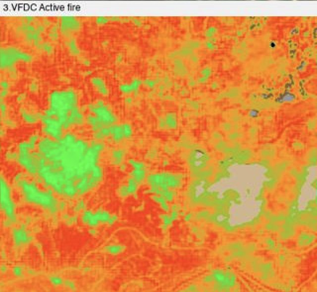
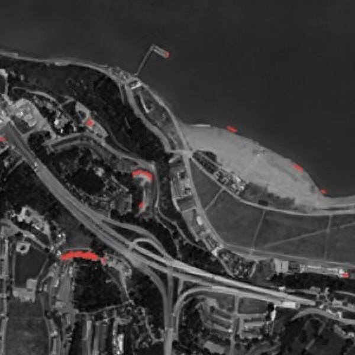
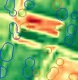
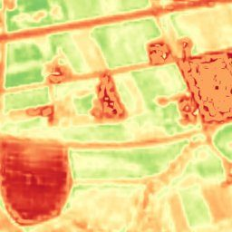

Every major satellite and aerial source
Fused into one continuously updated view of the ground
Turned into answers you can act on.
A persistent, wide-area layer that screens your entire area of interest continuously
Visual, multispectral, SAR, night-lights and terrain, worldwide
Flags what changed, so tasking and crews go only where they're needed.

Physics-enhanced true-colour — Sentinel-2 to 1 m and PlanetScope to 1.9 m — refreshed every 2–5 days (S2) to daily (PlanetScope), no hallucinations.
More info →
Ten calibrated spectral bands at 2–4 m — the analytical engine behind NDVI, moisture, burn and mineral indices.
More info →
All-weather Sentinel-1 radar at 2 m (delivered at 1 m), every 6 days — day, night and through cloud.
More info →
A seamless, near-cloudless global basemap — 10 m source, 5 m physics-based Derived Resolution, 2.5 m Super-Resolution.
More info →
Nightly 25 m night-lights, super-resolved from NASA Black Marble, for power, outage and activity tracking.
More info →
A global 1 m-post-spacing elevation model within a metre, vertically, of LiDAR.
More info →
Government aerial orthoimagery for 20+ countries, from 20 cm to 1 cm, some refreshed continuously.
More info →
Upload your own scene — ×2 Refined Reality, ×4 Super Resolution, or PlanetScope 1.9 m — from virtually any sensor.
More info →
Global trace-gas monitoring — NO₂, SO₂, CO, CH₄, HCHO and aerosols — absolute and year-on-year.
More info →
Live vessel tracks (AIS) overlaid on cloud-piercing SAR — every ship that reports, and the ones that don't.
More info →
Ready-to-interpret hydrothermal-alteration mapping at 2–4 m — the only sub-5 m SWIR mineral mapping since WorldView-3 retired.
More info →
The only global, frequent, per-site mining monitor that classifies detections by mineral type.
More info →
A single coherent fire-risk stack — fuel danger, active-fire see-through, burn severity, recovery and erosion cascade.
More info →Systematic national pipeline-leak detection from 2 m moisture indices — no tasking, no per-area pricing.
More info →
Continuous watch over pipelines, transmission lines, railways and borders for encroachment and change.
More info →
Pixels built now but not months ago — automated detection of unpermitted construction at national scale.
More info →
Physics-based, training-free land-cover and built-up mapping — built-up, roads, cropland, water and more from one representation.
More info →
Simulate inundation to any water level over 1 m imagery, driven by 0.5–1 m BaseDEM accuracy.
More info →
Continuous glacial-lake monitoring that models the water actually discharged downstream — not just total lake volume.
More info →
Catches divergence at 4×4 m — disease, pests, weeds, irrigation faults — weeks before it's visible at field scale.
More info →
Field-scale moisture and a 0–100 salinity score at 2 m, correct across the full range of conditions.
More info →
A 2 m biomass index auto-calibrated to geography, ranking grazing fields with 90%+ correctness.
More info →
Event/AOI imagery with broadcast rights, delivered on a fixed area box.
More info →A continuously refreshed 2.5 m basemap — hourly-updated, always the freshest pixel.
More info →A recency map of the ESRI world basemap — how old the imagery is, anywhere.
More info →Bring us the ground you need to watch. We'll show you what SkySpera can do with it.
Talk to us